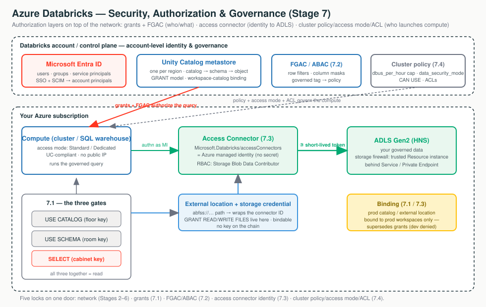

Think of governance as a secured office building. The network you locked down in earlier
topics is just the wall around it. A Private Endpoint stops the path; a missing
GRANT stops the query. A regulated customer needs both.
The keys. Need the floor, room, and cabinet key all at once.
Frosted glass: which rows and values you see at query time.
The keyless contractor badge that reaches ADLS.
Three locks on the compute door.
A user, group, or service principal a grant can target.
One account-level place to say who can do what to which object.
An Entra ID identity with no secret you ever see or store.
Pins a data domain to an environment. Supersedes grants.

Each tab below has its own clickable whiteboard: Access path → Grants, Storage credential chain → Storage Credential, Compute locks → Policies / Access Modes. Open a tab, then click a box to see what it does in plain English.
The network decides which packets reach storage; Unity Catalog decides which principal reads which row; the access connector decides who Databricks proves it is to ADLS; and policies, access modes, and ACLs decide who can launch the compute. Five locks on the same door.
Imagine your data as folders and files, each with its own lock. A grant hands someone a key to one of them. This tab is about who holds which keys — it's about identity and permission, not the network.
One account-wide rulebook listing who is allowed to do what to which piece of data.
Handing someone a key (a permission like "read this table"); REVOKE takes it back.
Nested folders and files: catalog holds schemas, a schema holds tables — each level has its own lock.
Simple version: Unity Catalog (UC) is the one place, at the account level, where you say "who
can do what to which object." Data lives in a three-level name: catalog.schema.object.
You control access with two SQL words: GRANT (give a privilege) and REVOKE (take it
away). The thing you grant to is a principal — a user, a group, or a service principal.
Click each box to follow a query from login through the grant gate to a filtered, audited result.
prod.sales.orders a user needs
three grants together: USE CATALOG on prod + USE SCHEMA on
prod.sales + SELECT on the table.| Building part | UC object | Key needed to enter |
|---|---|---|
| Building | Metastore (one per region) | — |
| Floor | Catalog | USE CATALOG |
| Room | Schema | USE SCHEMA |
| Cabinet | Table / view / volume | SELECT / READ VOLUME / etc. |
"To read a table a user needs three things together: permission to enter the catalog, enter the schema, and read
the table. If you grant SELECT alone it still won't work — that missing 'enter the floor' key is the
number-one reason a grant looks broken."
SELECT, still can't read" → missing USE CATALOG/USE SCHEMA gate,
unbound catalog, or a view whose owner can't read the base table.workspace admins group instead
of an account group.A grant lets someone open the table; this tab decides how much of it they actually see. Think of a spreadsheet where some rows are hidden and some cells are blacked out, automatically, depending on who's looking.
Trimming what a SELECT returns at query time, instead of all-or-nothing access to the whole table.
Hides whole rows a user shouldn't see (e.g. only their own region's records).
Blacks out part of a value (e.g. shows only the last 4 digits of an SSN).
Tag sensitive columns once; one rule then protects every tagged column, present and future.
Once a user has SELECT, by default they see every row and every column — often too
much. Fine-grained access control (FGAC) narrows what SELECT returns at query time,
transparently. Three tools, oldest to most scalable.
| Mechanism | Scales to many tables? | Reshapes data? | Users query |
|---|---|---|---|
| Dynamic views | No | Yes | The view |
| Table-level filter/mask | No | No | The base table |
| ABAC policies | Yes — one policy, by tag | No | The base table |
A filter or mask is just a UDF with an identity check inside. Dynamic views, table-level bindings, and ABAC policies are the same idea attached in three different places — the view, the table, or the governed tag. The identity functions run as the invoker (the person running the query).
ABAC defines a governed tag (pii=ssn), tags the sensitive columns,
then one policy at catalog/schema scope auto-masks every object carrying that tag, now and in future. ABAC for row
filters/column masks is generally available on Azure (verify current GA date and region before quoting).
"Yes, we can mask PII for everyone except a named clearance group and prove it to auditors. We tag the sensitive
columns once, write one policy at the schema level, and every tagged column — including new tables — is masked
server-side at query time. The clearance group goes in the policy's EXCEPT list, and every decision
is in the system.access audit tables."
Query returns no data after enabling FGAC → the compute floor: ABAC needs serverless or DBR ≥ 16.4; table-level needs DBR ≥ 12.2 LTS (15.4 for dedicated). It fails secure.
is_member() (workspace-local) instead of
is_account_group_member() (account); or ANSI is off so a type mismatch became NULL.EXCEPT.Your data really lives in Azure Storage, which Databricks doesn't own. So Databricks doesn't keep a copy of your storage key — instead it borrows a temporary, scoped key each time it needs to read, like a valet badge that expires in minutes. This tab is the identity side of reaching storage; the network road to it is a separate thing.
An Azure identity Databricks logs in as — with no password or key you ever see or store.
UC's note saying "I'm allowed to use that identity."
A storage path paired with that credential — the thing you actually grant people access to.
The temporary valet key Databricks gets per request, instead of a permanent secret.
The bridge between UC's logical permission model and the physical ADLS Gen2 that holds the bytes. Three objects, learned as a chain.
Click each box to follow the keyless path from a query to ADLS Gen2.
| Object | What it is |
|---|---|
| Access connector | A first-party Azure resource holding an Azure managed identity — the identity Databricks authenticates as. No keys, nothing to rotate. |
| Storage credential | A UC object that wraps the access connector's resource ID. UC's record of "an auth mechanism I'm allowed to use." |
| External location | A UC object binding a path (abfss://...) to a storage credential. The thing you actually GRANT on. |
External location (path + grants) → storage credential (which identity) → access connector (the managed identity) → RBAC on ADLS Gen2 — and there is no key to copy or rotate anywhere on that chain.
When a governed job needs data, Databricks authenticates as the managed identity to Microsoft Entra ID, gets a
short-lived OAuth token, and presents it to ADLS. ADLS checks that identity against its RBAC role assignments
(e.g. Storage Blob Data Contributor). Network reachability (Service/Private Endpoint, NCC) and this
credential chain must both succeed for a read.
"There is no storage key, and nothing to rotate. We create an access connector holding a managed identity, grant it an RBAC role on your ADLS account, and Databricks gets a short-lived token each time. It's also the one mechanism that works while storage is at 'no public access' — the managed identity is allowlisted as a trusted resource, which a service principal can't be."
Catalog Explorer → external location → Test connection. Fails on authorization → RBAC/identity half. Fails on reachability/timeout → network half (firewall / private endpoint / DNS). Don't chase RBAC for a firewall block.
Data rules only matter if the computer running the query is set up to honor them. Think of renting a car: a cluster policy is the rental agreement (which models, how much you can spend), and the access mode is whether it's a private car or a shared shuttle — which decides whether Databricks' governance can ride along.
A template that caps the size and cost of compute people can launch.
Dedicated (one user/group) or Standard (many users, isolated) — both work with Unity Catalog; older modes don't.
If a cluster runs in a non-UC mode, it can sidestep your data rules — so the mode is a security control, not just a setting.
Three distinct controls that decide who can spin up compute, what it can be, and who can touch the objects around it. Keep them separate.
Click each box to see the three separate compute controls and how they fit together.
A template + rulebook capping node type, workers, and $/hour via DBUs. No policy access → no compute.
Standard or Dedicated. UC requires one of these. Decides who shares it and what UC features it gets.
The per-door badge reader on each cluster, job, secret scope, notebook.
The policy is JSON mapping an attribute to a limitation. The two levers that matter most:
dbus_per_hour (a range with maxValue — your cost cap) and data_security_mode
fixed to USER_ISOLATION/SINGLE_USER (how you force UC compliance).
| Dimension | Standard (USER_ISOLATION) | Dedicated (SINGLE_USER) |
|---|---|---|
| Shared by | Many users, isolated | One user or one group |
| Unity Catalog | Yes | Yes |
| ML / GPU / R / RDD | No | Yes |
| Best for | Default, BI, collaborative | ML, R, single-team |
The UI says Standard (was "Shared") and Dedicated (was "Single user"), but
REST/Terraform still use USER_ISOLATION and SINGLE_USER. Legacy "No Isolation
Shared"/"Custom" are not UC-compliant. Know both names.
"To stop a six-figure GPU cluster we fix the node types and put a hard dbus_per_hour cap in a policy,
then grant CAN USE narrowly. To guarantee every cluster uses Unity Catalog we fix the access mode in the same
policy. One control bounds cost, the other forces governance, and ACLs decide who can attach to or manage each
object."
cluster_type doesn't allow
all-purpose.data_security_mode.By default, every workspace on the metastore can see every catalog. A catalog-to-workspace binding makes a catalog visible only to certain workspaces — like making the "prod" folder appear only on the prod team's computers, so the dev workspace can't even see it.
Workspace-catalog binding pins a data domain (a catalog) to a processing environment (a workspace). By default a catalog is reachable from every workspace attached to the metastore; binding overrides that to a chosen set.
From an unbound workspace, access is denied even with an explicit SELECT. This is
environment isolation that keeps prod data reachable only from prod workspaces. External locations and storage
credentials can be bound the same way.
"To prove prod data is unreachable from the dev workspace, we bind the prod catalog and the prod storage credential to prod workspaces only. Even if someone has a valid grant, an unbound workspace is denied — and the dev workspace physically can't mint a token to prod storage."
Binding and grants are two separate gates that both must be satisfied. A grant that "silently does nothing" in one workspace is often a binding issue, not a grant issue.
| Question | Lever |
|---|---|
| Can this principal read the object at all? | Grants (7.1) |
| Can this workspace reach the catalog/storage? | Binding (7.1 + 7.3) |
| Can these packets reach storage? | Network path (Topics 5-6) |
Don't start by memorizing privileges or JSON keys. Start by asking what gate the request is failing.
| Symptom | First Thing To Think |
|---|---|
Granted SELECT, still can't read | Are USE CATALOG/USE SCHEMA gates missing? |
| Read works one workspace, denied in another | Is the catalog ISOLATED and unbound there? |
| FGAC returns no data after enabling | Is the compute below the DBR floor? (fails secure) |
| Mask never applies | Used is_member() instead of is_account_group_member()? |
| Storage read fails | Run Test connection — split identity (RBAC/HNS) from network |
| 403 though credential validates | Is RBAC on the connector identity, not the managed-RG one? |
| Dev workspace reaches prod storage | Is the credential/external location unbound? |
| Policy edited but clusters over budget | Check the Compliance column; enforce on restart |
| Job ran as a high-priv identity | Run Now runs as the job owner — check the owner |
| Secret got exposed | READ on a secret scope reveals the whole scope |